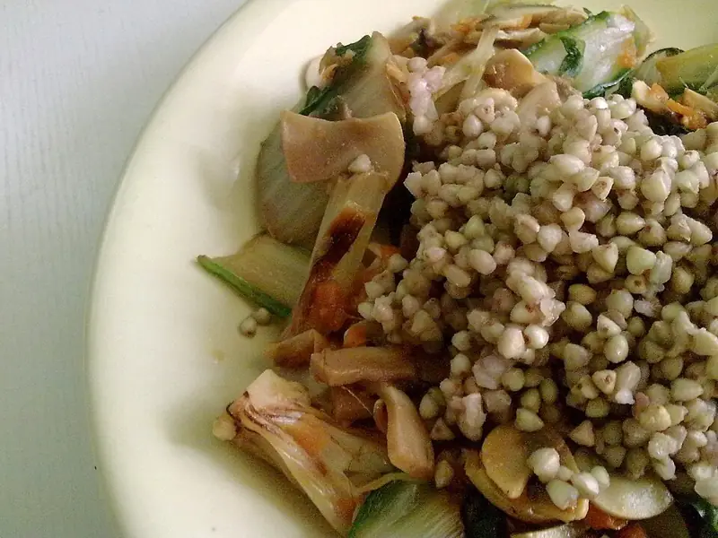

Фото: Lablascovegmenu from London, CC BY 2.0
.jpg){kind=link}
Гречка по-купечески постная с грибами
Гречка, тушённая в одной сковороде с грибами, морковью, луком и томатом
45 мин4 порц.386 ккал на порциюБ 14 · Ж 13 · У 56Русская кухня
Продукты на 4 порц.
- Гречка1,5 стак.
- Шампиньоны300 г
- Морковь2 шт
- Лук репчатый2 шт
- Томатная паста1 ст. л.
- Чеснок2 зуб.
- Растительное масло3 ст. л.
- Вода3 стак.
- Лавровый лист1 шт
- Соль1,5 ч. л.
- Перец чёрный молотыйпо вкусу
Как готовить
- Гречку переберите и промойте до прозрачной воды.
- В глубокой сковороде с толстым дном разогрейте масло на сильном огне, жарьте нарезанные грибы 7 минут до испарения сока.
- Добавьте лук кубиком и морковь на крупной тёрке, жарьте на среднем огне 5-6 минут до мягкости.
- Вмешайте томатную пасту и чеснок, прогрейте 1 минуту.
- Всыпьте гречку, разровняйте, залейте горячей водой, посолите, положите лавровый лист.
- Доведите до кипения, накройте крышкой и тушите на слабом огне 20 минут, пока вода не впитается полностью.
- Снимите с огня, перемешайте, поперчите и дайте постоять под крышкой 10 минут.
Совет. Не мешайте гречку во время тушения, иначе она станет липкой. Соотношение крупы и воды 1 к 2.